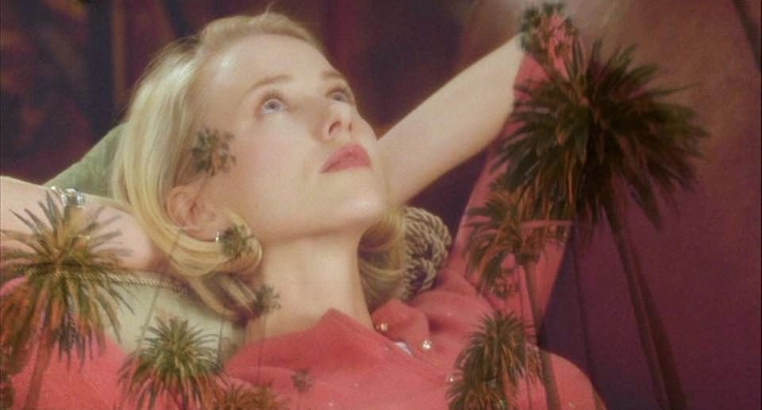 We see a sequence of people dancing with a elderly couple looking on fade in and out throughout the dance before it ends. We follow a Limo driving through the darkness of the Hollywood hills. Two men in suits are sitting in the front while a dark haired woman is sitting in the back. The car stops and one of the men pulls out a silenced pistol and orders the woman to get out of the car. As one of the men come out the car to drag her out a car who was racing another car on the hills crashes into limo which causes both men to die instantly. The woman was thrown to the back of the seats and had hit her head causing her to start bleeding. After realizing what just happened she leaves the car and starts to walk through the trees and hills of Hollywood trying to get to safety as she sees the overview of Los Angeles. As she walks the streets she hides behind bushes and trees when she senses someone might see her.
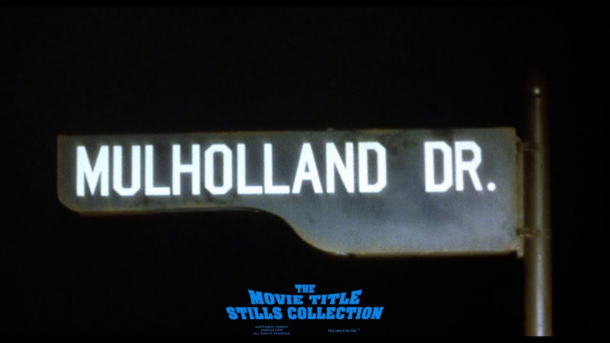As she wakes up she sees someone in front of the house shes hiding at packing her things into a taxi and when she looks away the woman sneaks into the house. We then see a diner where a man is telling his friend about a horrifying dream he had about seeing a man behind the diner and he came here to the exact diner in his dreams to see if the man is there. He explains that he had two of the same dreams and his friend was in both of them very afraid. They then walk out to the back of diner to confront his fear and then we he reaches the wall BOOM! a hideous man scares him causing him to collapse.
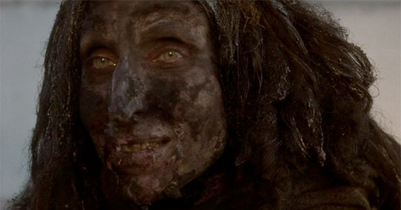We cut to the woman still sleeping as, a small man calls someone at the front desk telling him the girl is still missing. We then see a blonde woman named Betty arrive in Los Angeles at the airport and she is excited to finally be here. She kisses this elderly couple goodbye and they wish the best while she is here. As she leaves the elderly couple in the taxi have this eerly smile as they leave. Betty then arrives at the place she is staying at, its the same place the dark hair woman snuck into! She meets the manager and they have small talk as she escorts Betty into her new home. Betty then explores her new place joyfully and goes into the bathroom where she finds the dark hair woman showering she is startled and says she didn't know her Aunt Ruth had someone else living here. Betty asks for her name but she couldn't answer as she looks lost trying to remember her name. As she is drying up from her shower she sees a poster on wall for the film 'Gilda' and the actress name was Rita Hayworth, so she tells Betty her name is Rita!
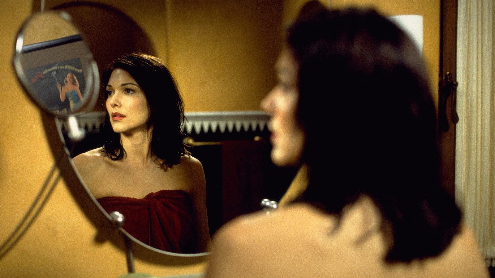At a tall building, with a big sign called Ryan Entertainment, we see businessmen talking to a Director asking or urging him to cast a certain actress for his movie. We learn the direcot rname is Adam Kesher and that the woman they want him to cast is a blonde woman named Camilia Rhodes. As one man keeps saying this is the recommendation another man insists this is the girl and not a suggestion. As Kesher resists and says no way the man across from him stares deep into his eyes with a fierce intimidating look. After a series of weird tense strange events where the man drinks his expresso and spits it out, the room becomes loud and Kesher exclaims "that is not the girl!" while the man in a calm tone says "this is no longer your film." After Kesher leaves the building he finds the car that belong to the people that are taking over his film and destroy their car. The scene cuts the small man in the chair and one of the businessmen explains to him that Kesher does not want the girl and the small man says to shut it all down.
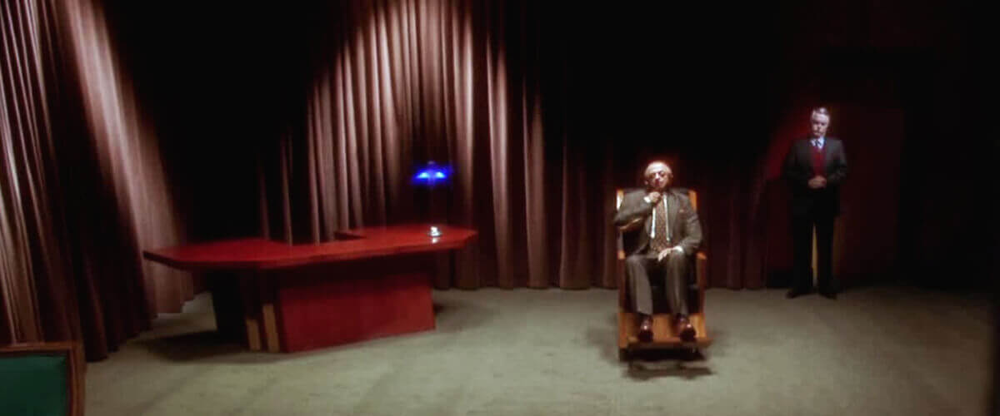Two men are having a conversation, and then all the sudden the man standing up takes out a silenced pistol and kills the man. After trying to stage the scene as a suicide he accidentally fires off the gun, firing the bullet into the wall hitting the next door neighbors leg. After going to the next door neighbor to kill the lady he accidentally shot he seems to struggle a lot with completing the job. He begins to drag the lady through the hallway covering her mouth but once the janitor spots him and stares at him. The assassin is trying to explain to the janitor what is happening but the janitor is not buying it. The janitor enters the room where the dead bodies and the assasin kills him too, he then tries to setup the scene as the man he originally killed shot the janitor but as he shoots the gun again at vaccuum it causes a fire which causes him to leave.
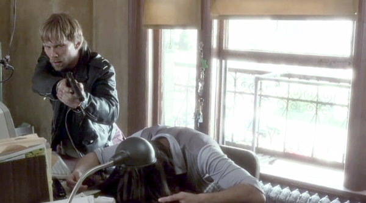Betty is on phone telling her Aunt Ruth about her friend Rita, but Aunt Ruth tells Betty that she does not know who Rita is and that she should call the police. But Betty declines and wants to sort things out before doing that. As Betty confronts Rita, Rita starts to cry and explain to Betty that she does not know who she is. Betty brings Rita purse and tells her that her name msut be in here but all she pulls out is a ton of cash and a blue key as they both stare at each other.
Betty asks where she was going and then Rita remembers that she was going to Mulholland Drive. Betty suggests that they go there and pretend that they are different people, eventually Rita agrees so they can see if there was an accident on Mulholland Drive. Adam Kesher then arrives at his home to see his wife cheating on him with another man (Billy Ray Cyrus!). His wife gets mad asking why is he here Kesher in a calm matter after finding out his wife has been cheating, grabs a box from the cabinet and leaves the room. Kesher then grabs paint and spills it all over the jewlery inside the box in then which the two begin to fight. The man then hits Kesher and throws him out his own house as he and Kesher's wife stay in the house while Kesher is forced to leave.
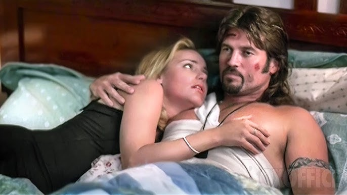Betty and Rita hide her purse with the key inside of a box in the dresser. They arrive at the same diner we first saw in the beginning of the movie. They reach a payphone to ask the police about a crash that happened on Mulholland Drive but when they ask for Betty's name she hangs up. After going inside to grab coffee and see if the newspaper has anything on the accident, Rita stares at a waitress name tag "Diane" and then explains that she remembered something she says maybe her name was Diane Selwyn. They call a number onto a phone book with the name it goes to voicemail but the voice is not Rita but they assume that maybe Diane was her roommate.
Adam Kesher is staying at a hotel while hes been kicked out but the manager comes to him and says that people from his bank came to tell him that his line of credit has been cut and they know where Kesher is. As Kesher calls his assistant, his assitant says hes broke and that a person named "The Cowboy" wants to meet him. Adam agrees to meet him as he believes his day can't get any worse.
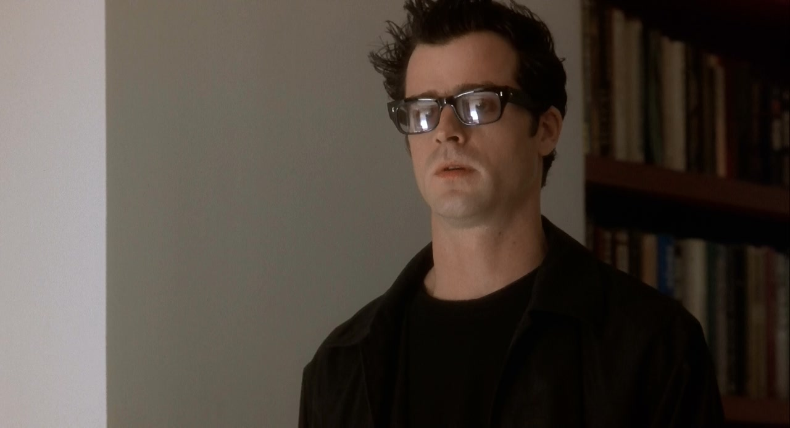Betty and Rita find the home of where the number belongs to. Rita is still unsure of going but Betty assures her it will be fine. A woman knocks on the door and Betty answers to which the woman in disstressed tells her that there is someone in trouble when Betty tells the lady her name the lady says that no that is not her name. The lady says there is someone else in trouble and the camera peeks over to Rita sitting on the couch watching. As the manager comes to help dissolve the situation and give Betty a script for an audition she has soon, Betty goes back to Rita and the camera closes up on Ritas face and shows how freightend she looks.
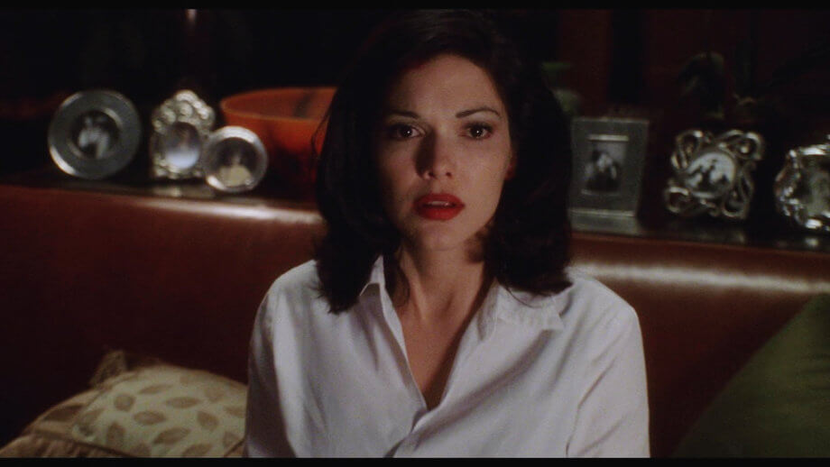Adam Kesher arrives at a ranch at the top of a mountain in the middle of the night and in the dark is "The Cowboy". The Cowboy talks to Kesher and says "A Man's attitude dictates". After talking to Kesher in riddles and metaphors he explains to Kesher he needs to go back to work and needs to cast Camilia Rhodes, as the lead actress, for the betterment of his life.
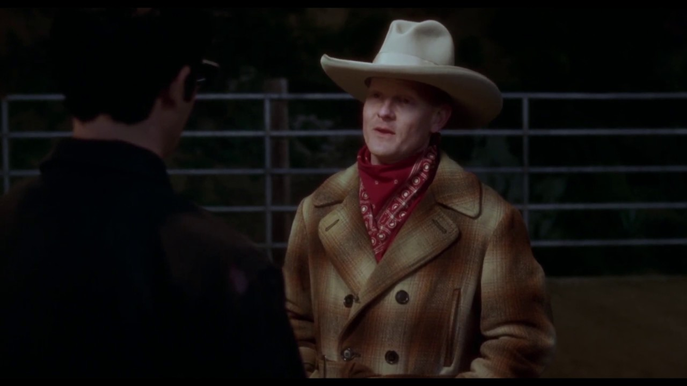Betty and Rita practice lines for Betty's audtion soon. The manager, Coco, comes over to talk to Betty about who is the woman staying in her Aunt's House and she lies to Coco that Rita is a friend but Coco knows she is lying and tells Betty that she has to get rid of the trouble in her home. Betty leaves to go to a Hollywood set for her audition, which leads her to a room with a bunch of old Hollywood executives. The executives have Betty audition in front of them which leads to an uneasy/uncomfortable scene which is a contrast from the first hour fo the movie/s tone. Betty knocks the audition out the park but after they leave red hair woman says that the director will never get his movie made due to others interfering.
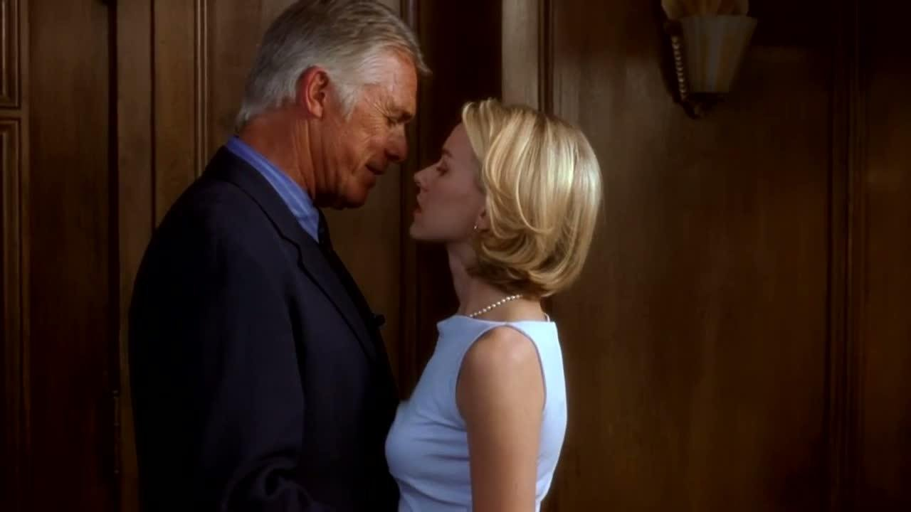Betty is taken to a set nearby which is the exact same place Adam Kesher is holding auditions for his movie. As Betty walks in Kesher notices Betty and looks like he found his dream girl but has a look of sadness on his face because he realizes he can't even think about casting her. It is Camilia Rhodes turn to audition, he turns to an executive and tells him that Rhodes is the girl for his movie as a man in control of his film comes out of nowhere and says excellent choice. Adam turns around one last time to look at Betty but Betty realizes she has to leave to help Rita find her identity and Adam has a look of sadness once more as he watches Betty leave.
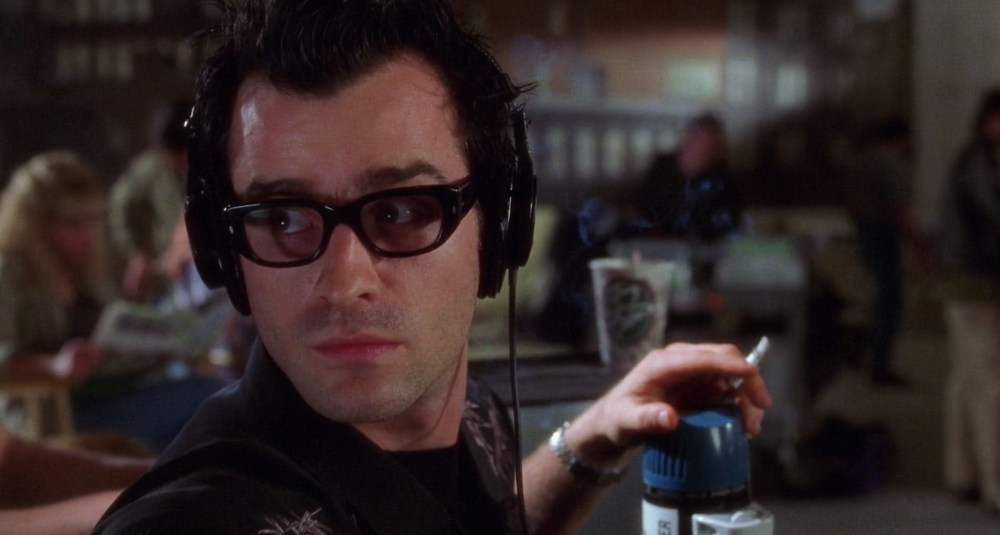As Betty and Rita reach the house they were looking for, Rita gets scared and hide under the window as she sees two men in suit waiting in a car, maybe she remembers that two men in suits tried to take her life earlier. Betty and Rita reach the front door of the house but as Betty is about to knock Rita tells her no don't knock as she knocks no one answers until a minute later a lady opens the door. Betty asks if she's Diane but the lady says no that Diane and her switched apartments to apartment 17. Betty and Rita reach apartment 17 and knock but no one answers, they soon find a way inside through an open window on the side of the house. Rita still nervous and unsure about this helps Betty through the window and enters the house once Betty opens the door. Betty and Rita smell something horrible in the house and as they enter a bedroom find a decaying body on the bed, Rita screams but Betty closes her mouth before anyone else can hear her. Betty and Rita leave with Rita running out the house screaming in horror as to what she saw.
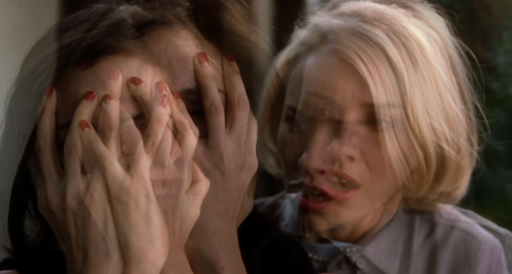Rita reaches Betty apartment and begins to cut her hair, Betty says she understands what she has to do but to let her do it and Rita appears next with a blonde short wig. Night approaches and Betty tells Rita she does not need to wear the wig in the house and does not need to sleep on the couch and invites to her bed. Rita undresses and gets in bed with Betty and tells her thank you for everything, she reaches over to kiss Betty on forehead but the two begin to make out. Rita ask if Betty has ever done anything like this before but Betty says she wants to with her and whispers to Rita that she is in love with her. As they are asleep, Rita begins to say "Silencio" in her sleep and speaks spanish she begins to tell Betty that she needs to go somewhere with her.
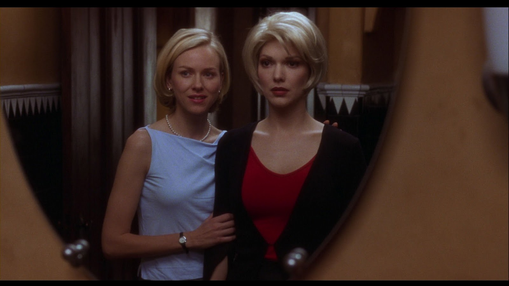Betty and Rita in the middle of the night arrive at a club with a show going on. A man saying that this is all an illusion that there is no band but we can hear them. He puts his hands up causing thunder to be heard and Betty begins to shake in her chair. The man disappears in smoke from the stage and leads to a woman to come on stage and start singing. As the woman is singing both Betty and Rita begin to cry, the woman stops singing but the song keeps playing and she collapses on stage and two men come carry her out. As the lady is carried out Betty reaches in her purse and pulls out a blue box which leads her and Rita to stare at each other and leave.
Betty and Rita bring the box back to the apartment and grab the blue key they found earlier in Ritas purse. As Rita brings down the box with the key in it and turns around Betty disappears. She says "Donde Estas" looking for Betty but she eventually grabs the key and puts it in the blue box and unlocks the box open as the box opens the camera zooms in the pitch black darkness that is in the box and the box falls to the ground with Rita disappearing.
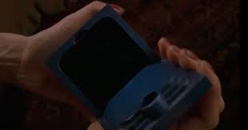
Aunt Ruth hears something coming from her room which leads her to check but nothing is there. We go back
the room Betty and Rita found the dead body in but
The Cowboy opens the door to the bedroom with the body and says its time to wake up but the body doesn't
answer. We then see Betty wake up in the same bed to a knock on the door
its the neighbor we met earlier asking her for her stuff back. But the neighbor doesn't call her
Betty
she calls her Diane! She leaves Diane's house saying that two detectives were
looking for her. Diane then goes to the sink to remember a time in her life, when she turns around Rita
is there in the house but she doesn't call her
On the set of a movie, Diane is watching Adam Kesher directing a movie and is showing an actor how to do a scene with Camilia. Adam Kesher while demonstrating the scene is getting intimate with Camilia and we say a very jealous Diane about to cry watching Camilia and Adann Kesher making out. Cut to Diane's house Diane is screaming at Camilia saying that this is not easy for her as she shuts the door and begins to cry on her couch. Camilia calls Diane to tell her that the car is waiting for her as they have a party to attend and the address is on Mulholland Drive. Very reminiscint of the first scene of the movie, Diane is in the back of a car and the car pulls over. Diane nervous says why did they stop and the man in the front looks back but this time he has no pistol and says that her stop is here. Camilia picks up Diane from the car and they both walk up to the party. They both sit at a dinner table and Diane is explaining how she made it to Hollywood, she explains she won a Jitterbug contest and it lead here to pursue her dreams. Diane met Camilia on the set of the sylvia north story (the same movie Adam Kesher was directing in the beginning of the movie). While Diane is explaining all of this we see characters from earlier in the movie and acting like they have never had any connection wth each other, in the midst of this Camilia is getting intimate with Adam Kesher and "Camilia Rhodes" from earlier in the movie. Diane begins to cry as she sees all of this and Adam Kesher is about to make an announcement for his and Camilias future but a sudden noise snaps Diane out of that memory.
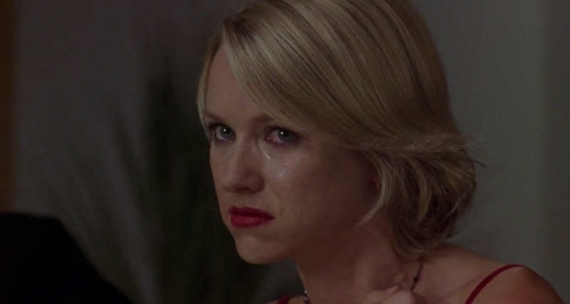Diane is in a diner with the man who hilariously killed those 3 people earlier in the movie. As the waitress is at their table she has the name tag Betty but it is a different blonde woman from our main character. Diane shows the man Camilia's photo and says this is the girl, he ask her if she is sure if she wants this and Diane says "more than anything". After she agrees the man pulls out a blue key says when the job is done you find this where I tell you it's going to be. Diane then noticess a man at the counter staring at her (the same man in the beginning of the movie recounting the nightmare he was having at this exact same diner). She asks what does the key open and the assassin begins to the laugh. The camera then goes to alley behind the diner and we see the homeless person that scared the man earlier in the film with the blue box in his hand. The man puts the blue box in a bag on the floor and we see the elderly couple that dropped off Betty in Los Angeles, come out the bag laughing disappearing. At Diane's home we see Diane anxiously looking at the blue key on her desk, signifying that the jobhas been done. The tiny elderly couple are seen crawling under her door as a loud knocking is heard while people are screaming and laughing. Diane runs as the elderly couple are human size again chasing her down her house laughing, leading her to her bed room where she grabs a gun from her drawer and shoots herself. The room is filled with smoke and the scene fades to moments with the homeless man, club silencio, and the skyline of Los Angeles. The last scene of the movie is the blue haired lady from Club Silencio whispering "Silencio" and the movie fades to black that was the horror of Mulholland Drive.
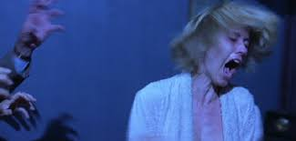